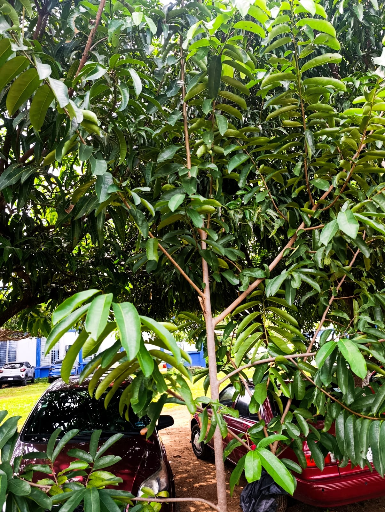
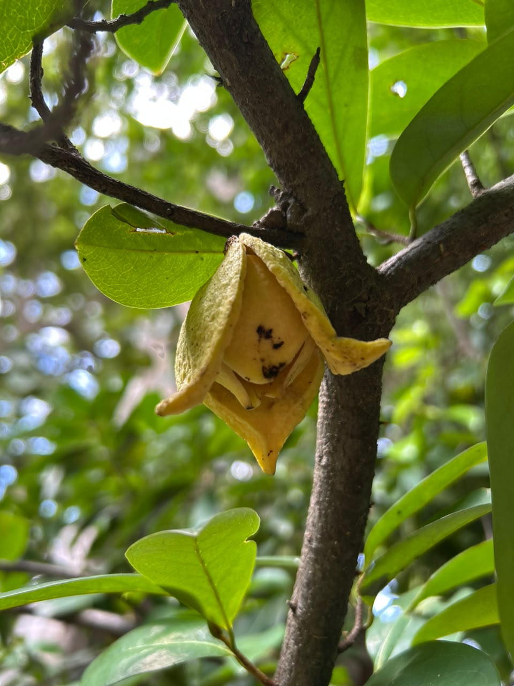
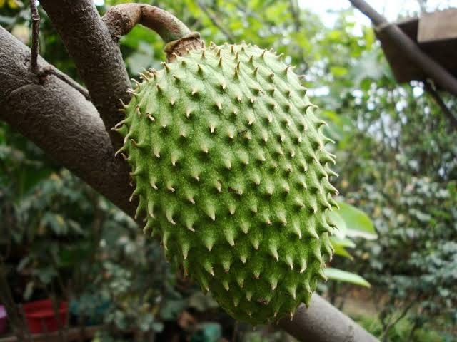

Guanabana

📸 Galería de la Guanabana




Nombre científico
Annona muricata L.
Familia
Annonaceae
Descripción
La guanábana es un árbol de tamaño mediano, con tronco recto y ramas extendidas. Sus hojas son simples, alargadas, de color verde oscuro y con margen entero, mientras que su fruto es grande y de forma ovalada, con cáscara verde cubierta de pequeñas protuberancias, pulpa blanca y suave, de sabor dulce y ligeramente ácido, y semillas negras en su interior.
Usos
La guanábana se utiliza principalmente como alimento, ya que su fruto se consume fresco, en aguas, licuados, nieves y postres. También se usa en la medicina tradicional mediante infusiones de algunas partes de la planta, aunque estos usos no sustituyen un tratamiento médico.
📍 Lugar donde fue encontrada
Municipio de Huehuetan Chiapas.